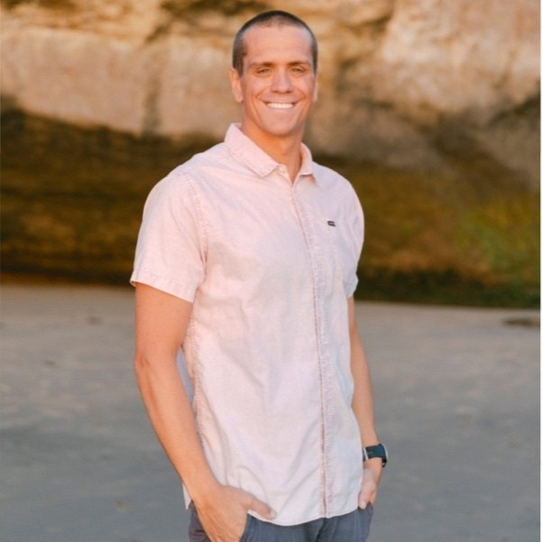
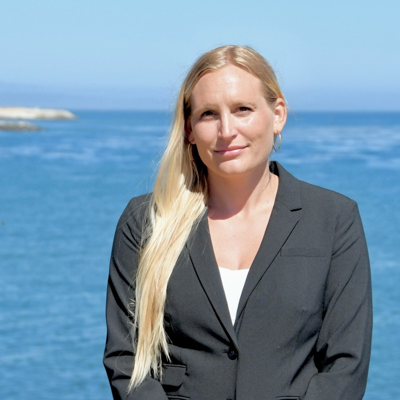
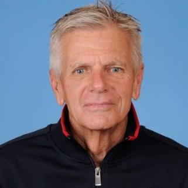
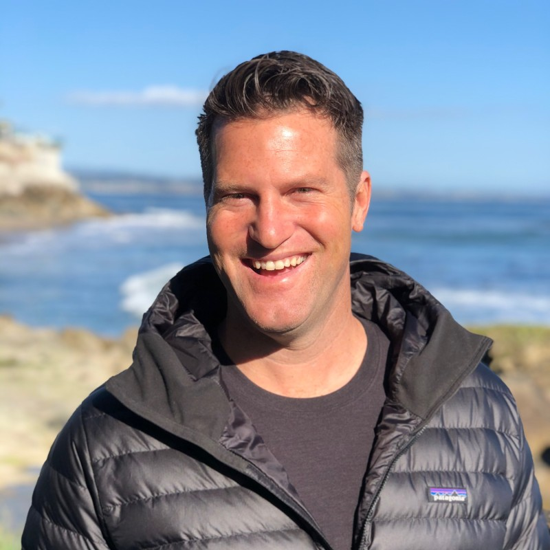
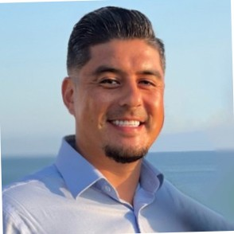

The Tom Shields Foundation is governed by a board of directors committed to transparency, mission alignment, and fiduciary integrity, and advised by practitioners at the highest levels of athlete mental health.




"The conversation that saves a life doesn't always happen in a therapist's office. Sometimes it happens in a locker room, after a talk from someone who's been there."
